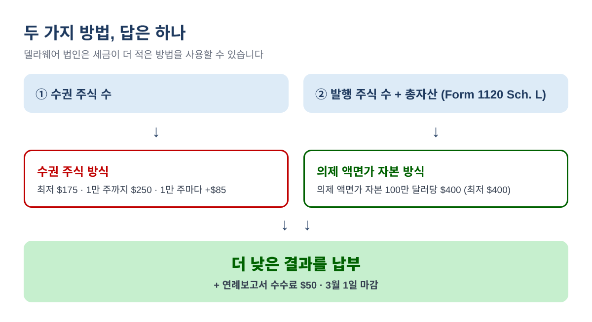
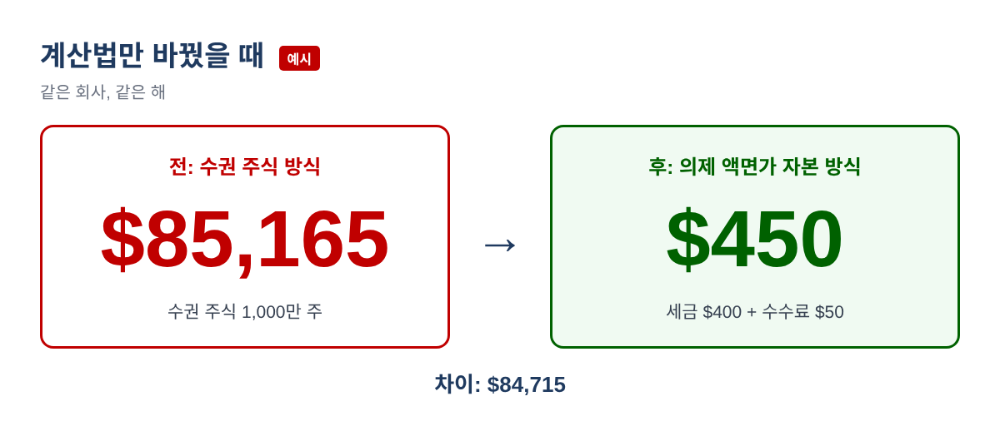
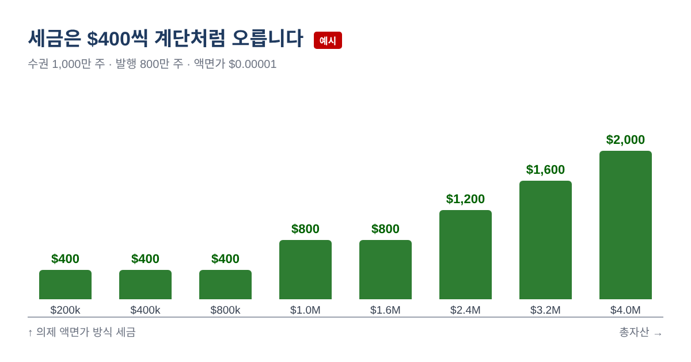
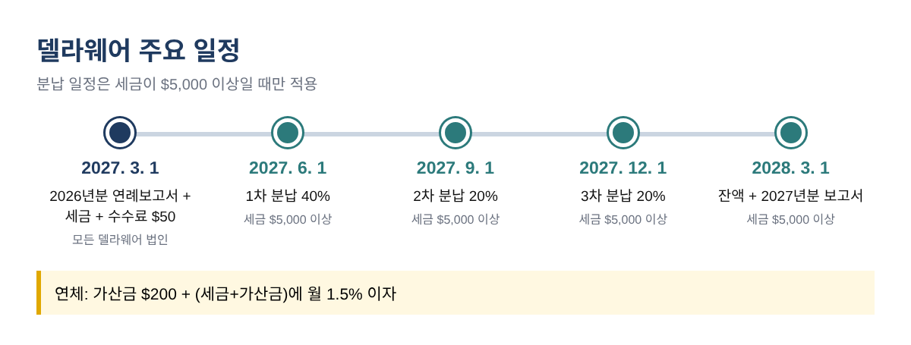

델라웨어 프랜차이즈세가 수만 달러? 의제 액면가 자본 방식으로 다시 계산하는 법 (2026년분 연례보고서)
델라웨어에 C-corporation을 세운 대표님들이 첫 프랜차이즈세 안내를 받고 가장 많이 놀라는 숫자가 $85,165 같은 금액입니다. 통장에 몇십만 달러밖에 없는 초기 회사에게는 말이 안 되는 금액이지요. 그런데 이런 경우 대부분은 실제로 내야 할 금액이 아닙니다. 델라웨어가 허용하는 두 계산법 중 한 가지로 계산한 숫자일 뿐이고, 다른 방법으로 계산하면 몇백 달러로 줄어드는 경우가 많습니다.
이 글에서는 엑셀이나 구글 시트에 직접 입력할 수 있는 수식으로 두 방법을 모두 계산해 보고, 2027년 3월 1일 마감 전에 2026년분 연례보고서 금액을 확인하는 방법을 정리했습니다. 미국 밖에 사시면서 델라웨어 법인을 운영하는 분들도 그대로 따라 하실 수 있습니다. 델라웨어 법인(corporation)에 해당하는 내용이며, LLC·LP·GP는 정액세를 내므로 맨 끝에 짧게 설명합니다.
한 문장으로 정리하면
델라웨어 Division of Corporations는 세금을 수권 주식 방식(Authorized Shares Method) 또는 의제 액면가 자본 방식(Assumed Par Value Capital Method)으로 계산할 수 있고, 세금이 더 적게 나오는 방법을 사용하라고 안내합니다. 첫 번째 방법은 정관이 허용한 주식 수만 보고, 두 번째 방법은 실제 발행한 주식 수와 회사의 총자산까지 함께 봅니다.

1단계: 숫자 네 개 준비하기
- 수권 주식 수와 주당 액면가(par value): 설립 증서(Certificate of Incorporation)와 모든 변경 서류에서 확인합니다. 보통주·우선주처럼 종류가 여러 개면 종류별로 따로 적어 둡니다.
- 연말 기준 발행 주식 수: 자기주식(treasury shares)을 포함합니다. 주주명부나 캡 테이블에서 확인합니다.
- 총자산(total gross assets): 2026년에 끝나는 회계연도의 Form 1120 Schedule L에 적힌 'total assets' 금액입니다.
2단계: 수권 주식 방식 계산
델라웨어 'How to Calculate Franchise Taxes' 페이지의 기준은 다음과 같습니다.
| 수권 주식 수 | 세금 |
|---|---|
| 5,000주 이하 | $175 (최저세) |
| 5,001 ~ 10,000주 | $250 |
| 그 이후 10,000주(또는 일부)마다 | $85 추가 |
| 최고 | $200,000 |
B1 셀에 수권 주식 수를 넣고 아래 수식을 입력하세요.
=MIN(IF(B1<=5000,175,IF(B1<=10000,250,250+CEILING((B1-10000)/10000,1)*85)),200000)
수권 주식이 1,000만 주라면 첫 1만 주를 넘는 9,990,000주가 999구간이 됩니다. 999 × $85 = $84,915에 $250을 더하면 $85,165. 깜짝 놀랄 금액은 여기서 나옵니다.
3단계: 의제 액면가 자본 방식 계산
- 의제 액면가 = 총자산 ÷ 발행 주식 수 (소수점 6자리)
- 액면가가 의제 액면가보다 낮은 주식 종류는 의제 액면가 × 그 종류의 수권 주식 수, 액면가가 더 높은 종류는 그 액면가 × 수권 주식 수로 계산합니다.
- 이 금액들을 더한 것이 의제 액면가 자본입니다.
- 세금은 100만 달러(또는 일부)마다 $400입니다. 다음 100만 단위로 올려 계산하며 최저 $400, 최고 $200,000입니다.
B2에 총자산, B3에 발행 주식 수, B4에 액면가(주식 종류가 하나일 때)를 넣고 아래처럼 입력합니다.
B5 (의제 액면가): =ROUND(B2/B3,6)
B6 (자본): =IF(B4<B5,B5,B4)*B1
B7 (세금): =MIN(MAX(400,CEILING(B6/1000000,1)*400),200000)
실제로 낼 세금은 두 결과 중 낮은 쪽입니다: =MIN(B7, 수권 주식 방식 결과). 여기에 비면세 국내 법인의 연례보고서 수수료 $50이 더해집니다.
계산 예시
예시 값: 수권 주식 1,000만 주(액면가 $0.00001), 발행 주식 800만 주, Schedule L 총자산 $250,000인 초기 스타트업
| 단계 (예시 값) | 계산 | 결과 |
|---|---|---|
| 수권 주식 방식 | $250 + 999 × $85 | $85,165 |
| 의제 액면가 | $250,000 ÷ 8,000,000 | $0.031250 |
| 의제 액면가 자본 | $0.031250 × 10,000,000 | $312,500 |
| 의제 액면가 자본 방식 | 100만 미만이므로 최저세 | $400 |
| 세금 + 수수료 $50 | $400 + $50 | $450 |

알아 두면 좋은 사례 세 가지
| 사례 (예시 값) | 수권 주식 방식 | 의제 액면가 방식 | 낮은 세금 |
|---|---|---|---|
| 시리즈 A: 보통주 1,500만 + 우선주 500만(액면가 $0.0001), 발행 1,200만, 자산 $8M | $170,165 | $5,600 | $5,600 |
| 소규모 가족 법인: 무액면 1,500주, 발행 1,000주, 자산 $600,000 | $175 | $400 | $175 |
| 높은 액면가: 500만 주(액면가 $1.00), 발행 100만 주, 자산 $500,000 | $42,665 | $2,000 | $2,000 |
시리즈 A 사례의 의제 액면가는 $8,000,000 ÷ 12,000,000 = $0.666667입니다. 두 종류 모두 액면가가 더 낮으므로 2,000만 주 전체에 의제 액면가를 적용해 $13,333,340, 100만 단위로 올리면 14 × $400 = $5,600입니다. 높은 액면가 사례는 액면가 $1.00이 의제 액면가 $0.50보다 높아 액면가를 그대로 씁니다. 무액면 소규모 법인은 수권 주식 방식 최저세 $175가 더 낮고, 주정부도 무액면 주식은 이 방식이 항상 더 낮다고 안내합니다.

4단계: 신고·납부, 그리고 다음 해 준비
- 2027년 3월 1일(월): 2026년분 연례보고서와 프랜차이즈세 마감, 온라인 신고입니다. 보고서에 발행 주식 수와 총자산을 둘 다 입력하세요. 의제 액면가 자본 방식은 이 두 숫자로 계산됩니다.
- 세금 $5,000 이상: 분납 대상입니다. 6월 1일 40%, 9월 1일 20%, 12월 1일 20%, 나머지는 3월 1일.
- 연체: 가산금 $200과 (세금+가산금)에 월 1.5% 이자
- 연중 주식 수가 바뀌었다면: 기간별로 (적용 일수 / 365)로 나눠 계산한 뒤 더합니다.

자주 하는 실수
- 처음 받은 금액을 그대로 납부하고 두 번째 방법을 계산해 보지 않는 경우
- 의제 액면가를 구할 때 발행 주식 대신 수권 주식 수로 나누는 경우
- 자기주식이나 우선주를 빠뜨리는 경우
- Schedule L 총자산 대신 현금이나 자본금 같은 다른 숫자를 쓰는 경우
- 수수료 $50을 빼고 납부해 금액이 모자라는 경우
- 비슷하게 생긴 고지서에 납부하는 경우. 주정부는 주정부나 등록대리인이 직접 보낸 것이 아닌 우편을 의심하라고 안내합니다.
자주 묻는 질문
의제 액면가 자본 방식은 따로 신청해야 하나요?
주정부 안내는 '더 낮은 세금이 나오는 방법을 사용하라'고만 되어 있습니다. 실제로는 온라인 연례보고서에 발행 주식 수와 총자산을 입력하면 두 번째 방법이 적용됩니다.
자산이 거의 없는데도 세금을 내야 하나요?
네. 수권 주식 방식은 최저 $175, 의제 액면가 자본 방식은 최저 $400이고 수수료 $50이 더해집니다. 자산이 아주 적을 때는 액면가를 확인하세요. 액면가가 의제 액면가보다 높으면 액면가로 계산됩니다.
델라웨어 LLC도 해당되나요?
아닙니다. LLC·LP·GP는 프랜차이즈세 보고서가 없고 6월 1일까지 정액세를 냅니다. 2026년 11월에 확인한 주정부 페이지에는 $400으로 나와 있습니다.
온라인 신고 화면 금액이 제 계산과 다르면요?
먼저 입력한 숫자를 주주명부와 Form 1120과 비교해 보세요. 숫자가 맞는데도 금액이 다르면 델라웨어 Division of Corporations나 등록대리인에게 문의하세요.
체크리스트
- 최신 정관 기준 주식 종류별 수권 주식 수·액면가
- 연말 발행 주식 수 (자기주식 포함)
- Form 1120 Schedule L 총자산
- 두 방법 모두 계산하고 낮은 결과 기록
- 2027년 3월 1일까지 보고서 신고, 세금 + $50 납부
- 세금이 $5,000 이상이면 분납 일정을 달력에 등록
이 글은 교육용 정보이며 세무·법률 자문이 아닙니다. 규정과 금액은 바뀔 수 있으니 신고 전에 델라웨어 Division of Corporations에서 확인하세요. 위의 금액은 모두 예시입니다.
위 과정을 그대로 해 주는 델라웨어 프랜차이즈세 계산기 2026은 아래 무료 키트 다운로드에서 가입 없이 무료로 받으실 수 있습니다(엑셀 + PDF 가이드).
출처
- Delaware Division of Corporations: How to Calculate Franchise Taxes
- Delaware Division of Corporations: Annual Report and Tax Information
- Delaware Division of Corporations: LLC, LP and GP Tax Instructions
- Delaware Division of Corporations: Exempt Corporations
무료 키트 다운로드
글에서 설명한 내용을 그대로 따라 할 수 있는 도구입니다. 가입 없이 바로 받으세요.
- Excel 계산 도구 (.xlsx)Delaware_Franchise_Tax_Calculator_2026_EN_KR.xlsx · 31 KB
- 단계별 가이드 (PDF)Delaware_Franchise_Tax_Guide_2026_EN_KR.pdf · 505 KB
본인과 본인 사업에 무료로 쓰세요. 재판매·재배포는 하지 마세요. 일반 정보이며 세무·법률·회계 자문이 아닙니다. 숫자는 본인 자료로 꼭 확인하세요.